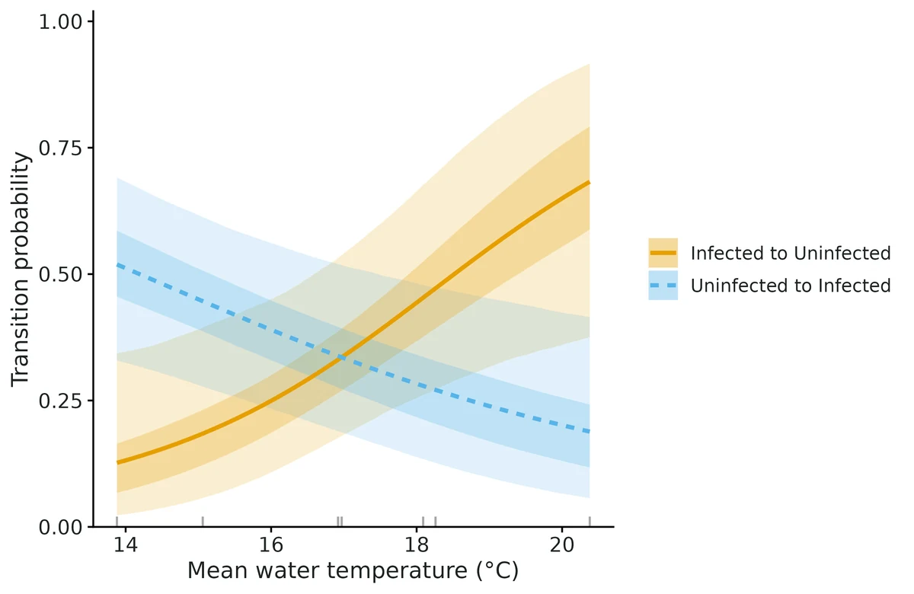
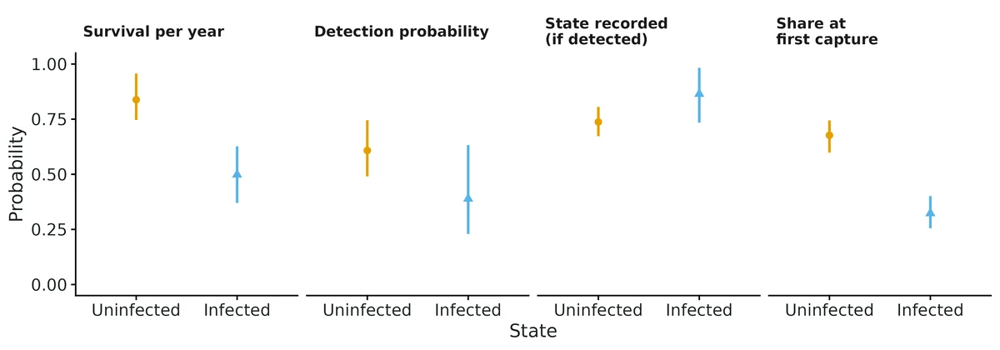
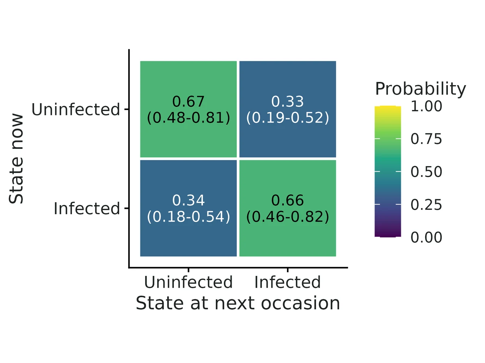
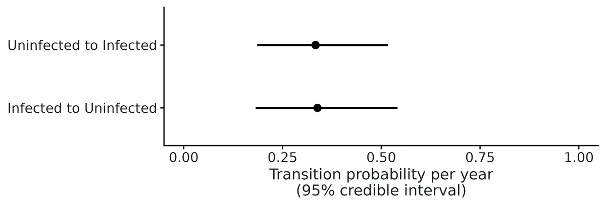

Multistate and multievent capture-recapture (Arnason-Schwarz / Pradel multievent)
"How likely are my animals to survive in each state, how often do they move or switch between states, and is switching associated with a covariate?" Typical examples:
Is this the right analysis?
Use it when
Individually marked animals are caught or resighted on repeated occasions and each capture records a state (site or wetland, breeding vs non-breeding, infected vs uninfected, size class), possibly with some captures where the state could not be determined; the question is survival in each state, how often animals move or switch between states, and what is associated with those transitions.
Not for
Plain survival without states (use cjs); abundance or recruitment (jolly-seber, scr-open); states that can be misclassified as another state (only "state recorded correctly or coded unknown" is modelled); unobservable states (e.g. temporary emigration to an unsampled site, skipped breeders that cannot be seen); dead recoveries; individual random effects; memory (second-order) transitions; animals with continuous position (use scr / movement-hmm).
The data you need
Capture records with animal id, occasion and recorded state (long CSV, wide table or capture-history strings; 0 = not seen, a state name, or an "unknown state" code), optional individual covariates (id + columns) and occasion covariates (occasion + columns).
What the example's main data file looks like:
| frog_id | year | bd_status |
|---|---|---|
| RL-0001 | 2015 | U |
| RL-0001 | 2016 | uninfected |
| RL-0001 | 2021 | infected |
| RL-0002 | 2015 | infected |
| RL-0002 | 2016 | uninfected |
Not sure? Use the finder to compare modules.
The worked example
Chytrid (Bd) infection, survival and clearance in a PIT-tagged frog population (multievent capture-recapture, simulated data with known truth)
A pond-breeding frog population is surveyed once a year, at the peak of the breeding season, from 2015 to 2022. Each frog caught gets a PIT tag (ids RL-0001 to RL-0280) and has its snout-vent length measured. Each capture also gets a skin swab, which qPCR tests for the amphibian chytrid fungus Batrachochytrium dendrobatidis (Bd). The result is uninfected or infected. Some swabs are lost, contaminated or inconclusive. Those captures are coded U: the frog was seen, but its infection status is unknown.
The question: Do infected frogs survive less well than uninfected frogs, how often do frogs become infected or clear Bd infection each year, is water temperature associated with infection and clearance, and do larger frogs survive better, when some swabs were lost or inconclusive?
The data are simulated, so the true answer is known and the analysis can be checked against it.
What the researcher typed
I have eight years (2015-2022) of capture data for a PIT-tagged frog population in three files: frog_captures.csv (each capture with the frog's id, year and Bd swab result: uninfected, infected, or U when the swab was lost or inconclusive), frog_individuals.csv (snout-vent length of each frog) and survey_years.csv (mean water temperature and survey effort in person-hours for each year). I want to know whether infected frogs survive less well, how often frogs become infected or clear the infection each year, whether water temperature is related to infection and clearance, and whether bigger frogs survive better. Please analyse this and give me a report with figures I can use in a paper.
Run it yourself
Download the example data below and unzip it.
Open the unzipped folder in Claude Code (see Install).
Paste the prompt above. The agent checks the files, writes a plan, runs planted truth, fits the model and writes the report. You can compare your results with the ones below.
Contains frog_captures.csv, frog_individuals.csv, survey_years.csv, the settings file (config.yaml), a description of the data and a step-by-step walkthrough.
Study design details
| states | uninfected, infected |
|---|---|
| model | multievent (Pradel 2005); U = swab lost/inconclusive |
| n occasions | 8 |
| years | 2015-2022 |
| n intervals | 7 |
| n frogs | 280 |
| new frogs per year | 40 in 2015-2021 |
| capture rows | 516 |
| records uninfected | 258 |
| records infected | 144 |
| records unknown | 114 |
| frogs recaptured | 141 |
| survival covariate | svl_mm (individual) |
| transition covariate | water_temp_C (occasion; 7 values used) |
| detection covariate | survey_hours (occasion) |
| engine | NIMBLE + nimbleEcology dDHMMo, 3 chains x 6000 iterations (2000 burn-in), slice samplers |
Results from the example data

In plain language
- Survival over one year for an animal with average covariate values was 0.84 (95% credible interval 0.75-0.96) in state 'uninfected'; 0.50 (95% credible interval 0.37-0.63) in state 'infected'.
- The difference in survival (uninfected minus infected) was 0.34 (95% interval 0.18 to 0.50); posterior probability that survival is higher in 'uninfected' = 1.00.
- Transitions are probabilities of being in a new state at the next occasion, for animals that survive the year (at average transition covariates): from 'uninfected' to 'infected' 0.33 (95% credible interval 0.19-0.52); from 'infected' to 'uninfected' 0.34 (95% credible interval 0.18-0.54).
- Expected number of years a surviving animal stays in a state before switching (1 / switching probability, median and 95% interval): 'uninfected' 3.1 (1.9-5.4); 'infected' 3.0 (1.8-5.5).
- Survival and svl_mm: odds ratio per 1 SD (= 6) 1.77 (95% interval 1.34-2.50); P(effect > 0) = 1.00. Going from the 10th to the 90th percentile of svl_mm (44.5 to 59), predicted survival changes in 'uninfected' from 0.72 to 0.91, in 'infected' from 0.33 to 0.65.
- Transitions and water_temp_C (from 14.6 to 19.1, 10th to 90th percentile): 'uninfected' to 'infected': 0.48 at the 10th percentile vs 0.23 at the 90th (difference -0.24, 95% interval -0.41 to -0.06); 'infected' to 'uninfected': 0.16 at the 10th percentile vs 0.56 at the 90th (difference 0.40, 95% interval 0.10 to 0.69). Associations only.
- Detection (the chance that a live animal is caught or resighted at an occasion, at average detection covariates) was 0.61 (95% credible interval 0.49-0.75) in 'uninfected'; 0.39 (95% credible interval 0.23-0.63) in 'infected'. Low detection in a state means fewer data on that state, not fewer animals.
- State uncertainty (multievent model): when a detected animal was in a given state, the probability that its state was recorded (rather than coded unknown) was 0.74 (95% credible interval 0.67-0.81) in 'uninfected'; 0.86 (95% credible interval 0.73-0.98) in 'infected'.
- Goodness of fit: posterior predictive checks showed no clear misfit (Bayesian p = 0.43 sightings per occasion, 0.64 state switches, 0.60 animals never seen again).
More figures



Figures are the module's default publication figures, reduced for the web. The report also saves them as PDF and full-resolution PNG.
Planted truth at the example's design
Before trusting the example's results, the module was run on many simulated data sets with the same design and known true values. Each row is one quantity: did the method get it back? (What the thresholds are.)
Every quantity checked passed planted truth at this design.
| This example | 8 annual occasions, 280 frogs (40 newly marked per year), 2 infection states with some swabs inconclusive |
|---|---|
| Design the module was validated at | 8 occasions, 280 animals (40 newly marked per occasion), 2-state multievent model |
The example matches the validated default design: a 2-state model with uncertain states, 8 occasions and 40 new animals per occasion. All 16 estimands passed there and 100/100 fits converged. The weakest quantities were the transition slopes on the yearly covariate (B-to-A slope bias -15%, power 0.40), so read the water-temperature effects on infection transitions through their intervals.
These calls sit close to the pass/fail line. With another 100 simulated data sets they could come out the other way, so read them as “about at the limit” rather than as a clear pass or fail.
- survival_beta_svl_mm (✓ PASS): bias +9.1% against an allowance of ±10.0% (set by the 10% rule), so it used 91% of the allowance.
16 of 16 rows pass; 1 is borderline.
Show the full recovery table (16 rows)
| Quantity | True value | Average estimate | Bias | Allowed bias | Coverage (needed) | Result |
|---|---|---|---|---|---|---|
| assignment_infected | 0.85 | 0.836 | -1.7% | ±10.0% | 0.95 (0.885) | ✓ PASS |
| assignment_uninfected | 0.75 | 0.758 | +1.1% | ±10.0% | 0.94 (0.885) | ✓ PASS |
| detection_beta_survey_hours | 0.4 | 0.425 | +6.2% | ±12.2%† | 0.96 (0.885) | ✓ PASS |
| detection_infected | 0.5 | 0.521 | +4.2% | ±10.0% | 0.96 (0.885) | ✓ PASS |
| detection_uninfected | 0.6 | 0.615 | +2.5% | ±10.0% | 0.93 (0.885) | ✓ PASS |
| initial_infected | 0.35 | 0.359 | +2.5% | ±10.0% | 0.93 (0.885) | ✓ PASS |
| initial_uninfected | 0.65 | 0.641 | -1.4% | ±10.0% | 0.93 (0.885) | ✓ PASS |
| stationary_infected | 0.462 | 0.483 | +4.7% | ±10.0% | 0.96 (0.885) | ✓ PASS |
| stationary_uninfected | 0.538 | 0.517 | -4.1% | ±10.0% | 0.96 (0.885) | ✓ PASS |
| survival_beta_svl_mm | 0.4 | 0.436 | +9.1% | ±10.0% | 0.91 (0.885) | ✓ PASS ≈ borderline |
| survival_infected | 0.55 | 0.551 | +0.1% | ±10.0% | 0.94 (0.885) | ✓ PASS |
| survival_uninfected | 0.75 | 0.759 | +1.2% | ±10.0% | 0.93 (0.885) | ✓ PASS |
| transition_beta_water_temp_C_infected_to_uninfected | 0.5 | 0.548 | +9.5% | ±23.1%† | 0.97 (0.885) | ✓ PASS |
| transition_beta_water_temp_C_uninfected_to_infected | -0.7 | -0.674 | +3.7% | ±12.2%† | 0.94 (0.885) | ✓ PASS |
| transition_infected_to_uninfected | 0.35 | 0.347 | -0.9% | ±10.0% | 0.97 (0.885) | ✓ PASS |
| transition_uninfected_to_infected | 0.3 | 0.321 | +7.1% | ±10.0% | 0.94 (0.885) | ✓ PASS |
Limits that matter
- Transition slopes on a yearly covariate rest on only 7 temperature values: power at this design was 0.76 for infection and 0.26 for clearance, and detected slopes tend to be inflated (example clearance slope 0.92 vs true 0.50). Associations only; confounded with any other year effect.
- False-positive rate for transition slopes was slightly above nominal (0.10 for one slope in the null validation run).
- Misclassification (e.g. false-negative qPCR recorded as uninfected) is not modelled; only lost/inconclusive swabs are treated as uncertain.
- Assignment (swab success) is assumed constant over time and the same at first capture and recaptures.
- Survival is apparent survival (death and permanent emigration are confounded).
- U-CARE tests are approximate for multievent data (unknown sightings treated as not seen).
- Covariate slopes on survival and detection are shared by both states; body length is fixed at first capture.
- The stationary distribution describes switching only and is not a prevalence forecast.
All known limits from the module's validation record
- Rare transitions are biased upward in the posterior mean. At true 0.05-0.10 with 3 states (section 3) the bias is +12-17% (~+0.01 absolute). Coverage is fine. Report medians/CIs, and be cautious when calling a rare transition "higher" than another. The independent 3-state multievent run showed the same upward pull (+21-26%, +0.03-0.04) for transitions out of a poorly observed state (assignment 0.5, detection 0.4), again with nominal coverage.
Transition slopes on occasion covariates are weakly estimated.
- With 8 occasions they have small-sample bias away from zero: -15% (multievent) and -19% (AS) for a -0.5 slope.
- The AS variant fails the bias gate for that one estimand.
- Power is low for moderate effects (section 7).
- The interpretation calls them associations.
- High state uncertainty. With assignment around 0.3 and fewer than about 200 animals (section 4), transition and assignment point estimates are prior-influenced (+11-25% bias). The intervals keep nominal coverage. Use the power/recovery commands at the researcher's own design before trusting transitions.
- Misclassification is not modelled. Only "state recorded correctly or coded unknown" is supported (Conn & Cooch 2009 partial observation). If states are sometimes recorded wrongly, transitions are biased (compare the negative control).
Not supported:
- unobservable states;
- memory (non-Markov) transitions;
- individual random effects;
- fully time-varying parameters (only occasion covariates);
- dead recoveries;
- state-specific covariate slopes on survival/detection (the slope is shared across states).
Goodness of fit.
- The U-CARE tests (R2ucare) assume the Arnason-Schwarz model. For multievent data they are run with unknown sightings treated as not seen, so they are approximate.
- The PPCs (Freeman-Tukey, state switches, never-recaptured) were checked on the example only. Their power to detect specific violations was not quantified by simulation.
- The false-positive rate for transition slopes was 0.10 for one of two slopes (n = 99). That is slightly above nominal (0.05); the other slope was 0.05.
- Compute. About 5 min per fit including compilation. Recovery at nsim = 100 takes about 30-40 min on 16 cores.
How this module was validated
- 100 simulated datasets per design, fitted with Nimble (3 chains x 2,000 iterations, 700 burn-in, slice samplers). To pass, bias had to be within 10% (or 3 Monte Carlo SE) and coverage (how often the 95% interval contained the truth) at least 0.885.
- Default design: 16 of 16 estimands passed. Other designs passed in part. The variant where state is always recorded passed 11 of 12 (B-to-A slope -18.8%). Three sites passed 12 of 15 (rare transitions +12 to +17%). High state uncertainty passed 12 of 16 (transitions +15 to +25%).
- Negative control: when unknown states were forced into the commonest state, the B-to-A transition was +32% with coverage 0.66. The gate failed, as it should.
- False-positive rate with no true effects: 0.05-0.10.
- Cross-checks: the hand-written likelihood and the marked package reached the same maximum (-2 log-likelihood 2097.24), and the Nimble posterior means were within 0.41 posterior SD of it.
- Power: survival and detection effects needed about 20 new animals per occasion. A large transition effect (0.8 per SD) needed 40-80. A moderate one (-0.5 per SD) was not reliably detected even with 560 animals.
- A separate verifier agent with its own simulator got 16/16 on one replicate set and 13/16 on another (the misses did not replicate), and 21/23 on a 3-state uncertain-state design. It found and fixed a bug in the maximum-likelihood initial-state output for 3 or more states, which did not affect any Nimble result.
Every run uses the acceptance gate described on the validation page. The full record follows, section by section, exactly as kept in the module's VALIDATION.md.
Settings and pass/fail rule used for every run
All runs used bin/Rscript core/run.R recover|power multistate on njobvu (16 cores; the power run used 14), with fast_settings: Nimble, 3 chains, 2000 iterations, 700 burn-in, slice samplers, no PPC and no U-CARE. The gate thresholds are the fixed core ones (recovery_gate):
bias <= max(10% of truth, 3 MC SE); for truth = 0, <= max(0.1 emp. SD, 3 MC SE) - coverage of the 95% CI >= 0.95 - 3 MC SE (0.885 at n = 100)
- >= 90% of replicates converged (max R-hat < 1.05)
The raw outputs are in results/multistate/validation/<run>/ (*_reps.csv, *_summary.csv, HTML report). The configs are in modules/multistate/validation/*.yaml. To reproduce a run, use bash dev/multistate/run_validation.sh <run>. The tables below were produced by dev/multistate/summarise_validation.R. "rel_bias" is bias / truth. "power" is the share of replicates whose 95% CI excludes 0.
Median time per replicate was 250-380 s (including Nimble compilation). A default real-data fit (6000 iterations x 3 chains, PPC and U-CARE) of the 280-frog example took about 5 min.
0. Engine correctness and cross-checks
Cross-check 1: Arnason-Schwarz data (420 animals, 8 occasions, no covariates). Three implementations were compared:
- Nimble (
dDHMMo, module default settings); - the module's hand-written forward-algorithm likelihood maximised with
optim(engine: ml); - the independent
markedpackage (Laake et al. 2013;crm, modelhmmMSCJS).
| param | truth | Nimble mean (SD) | hand ML | marked MLE (SE) | (Nimble - marked)/SD |
|---|---|---|---|---|---|
| survival_A | 0.80 | 0.790 (0.034) | 0.7838 | 0.7838 (0.044) | +0.17 |
| survival_B | 0.65 | 0.600 (0.042) | 0.5931 | 0.5931 (0.072) | +0.16 |
| detection_A | 0.60 | 0.697 (0.125) | 0.6461 | 0.6461 (0.209) | +0.41 |
| detection_B | 0.50 | 0.569 (0.181) | 0.5734 | 0.5734 (0.397) | -0.02 |
| transition_A_to_B | 0.30 | 0.374 (0.109) | 0.3380 | 0.3380 (0.215) | +0.33 |
| transition_B_to_A | 0.40 | 0.504 (0.111) | 0.5240 | 0.5240 (0.236) | -0.18 |
- The hand-written likelihood and
markedgive the same maximum: -2lnL = 2097.24 for both. Their estimates agree to < 3e-5. - The Nimble posterior means lie within 0.41 posterior SD of the MLE. The differences are the expected mean-vs-mode gap for skewed posteriors.
- This dataset has weakly identified detection (large
markedSEs), and that is where the gaps are largest. - Nimble max R-hat 1.009, min ESS 208.
Cross-check 2: multievent data with all three covariates (default design, seed 11). Nimble vs the hand-written multievent forward-algorithm ML:
All 16 estimands agree within 0.30 posterior SD. Examples:
- survival_A 0.794 vs 0.792;
- assignment_A 0.690 vs 0.683;
- transition_beta_temp_A_to_B 1.29 vs 1.30;
- detection_beta_effort 0.503 vs 0.494.
- Every Nimble posterior mean lies inside the ML 95% interval.
- Nimble max R-hat 1.005, min ESS 1536.
1. Default design (multievent, 2 states, 8 occasions, 40 newly marked per occasion = 280 animals): PASS 16/16
| estimand | truth | mean_est | rel_bias | bias | mcse | coverage | bound | ci_width | power | gate |
|---|---|---|---|---|---|---|---|---|---|---|
| assignment_A | 0.7 | 0.712 | +1.7% | 0.012 | 0.0044 | 0.98 | 0.885 | 0.195 | PASS | |
| assignment_B | 0.8 | 0.793 | -0.9% | -0.0069 | 0.0071 | 0.95 | 0.885 | 0.281 | PASS | |
| detection_A | 0.6 | 0.61 | +1.7% | 0.01 | 0.0068 | 0.94 | 0.885 | 0.261 | PASS | |
| detection_B | 0.5 | 0.526 | +5.2% | 0.026 | 0.0091 | 0.94 | 0.885 | 0.353 | PASS | |
| detection_beta_effort | 0.5 | 0.547 | +9.4% | 0.047 | 0.013 | 0.94 | 0.885 | 0.522 | 0.99 | PASS |
| initial_A | 0.6 | 0.589 | -1.9% | -0.011 | 0.005 | 0.95 | 0.885 | 0.187 | PASS | |
| initial_B | 0.4 | 0.411 | +2.8% | 0.011 | 0.005 | 0.95 | 0.885 | 0.187 | PASS | |
| stationary_A | 0.571 | 0.571 | +0.0% | 5.5e-05 | 0.0081 | 0.97 | 0.885 | 0.324 | PASS | |
| stationary_B | 0.429 | 0.429 | -0.0% | -5.5e-05 | 0.0081 | 0.97 | 0.885 | 0.324 | PASS | |
| survival_A | 0.8 | 0.802 | +0.3% | 0.0022 | 0.0038 | 0.95 | 0.885 | 0.143 | PASS | |
| survival_B | 0.65 | 0.641 | -1.3% | -0.0086 | 0.005 | 0.93 | 0.885 | 0.183 | PASS | |
| survival_beta_size | 0.5 | 0.485 | -3.0% | -0.015 | 0.011 | 0.94 | 0.885 | 0.471 | 0.99 | PASS |
| transition_A_to_B | 0.3 | 0.316 | +5.2% | 0.016 | 0.0069 | 0.95 | 0.885 | 0.28 | PASS | |
| transition_B_to_A | 0.4 | 0.424 | +6.1% | 0.024 | 0.0085 | 0.98 | 0.885 | 0.333 | PASS | |
| transition_beta_temp_A_to_B | 0.8 | 0.826 | +3.2% | 0.026 | 0.029 | 0.93 | 0.885 | 1.14 | 0.87 | PASS |
| transition_beta_temp_B_to_A | -0.5 | -0.574 | -14.8% | -0.074 | 0.037 | 0.95 | 0.885 | 1.4 | 0.40 | PASS |
All 100 replicates converged. Every estimand passes. The weakest quantities are the transition slopes on the occasion covariate (7 values):
- B->A: rel. bias -15%, inside 3 MC SE; power 0.40.
- A->B: power 0.87.
2. Arnason-Schwarz variant (state always recorded), same design: 11/12 PASS
| estimand | truth | mean_est | rel_bias | bias | mcse | coverage | bound | ci_width | power | gate |
|---|---|---|---|---|---|---|---|---|---|---|
| detection_A | 0.6 | 0.613 | +2.1% | 0.013 | 0.006 | 0.96 | 0.885 | 0.247 | PASS | |
| detection_B | 0.5 | 0.519 | +3.8% | 0.019 | 0.0088 | 0.94 | 0.885 | 0.332 | PASS | |
| detection_beta_effort | 0.5 | 0.544 | +8.8% | 0.044 | 0.013 | 0.93 | 0.885 | 0.518 | 0.99 | PASS |
| stationary_A | 0.571 | 0.57 | -0.3% | -0.0017 | 0.0072 | 0.93 | 0.885 | 0.278 | PASS | |
| stationary_B | 0.429 | 0.43 | +0.4% | 0.0017 | 0.0072 | 0.93 | 0.885 | 0.278 | PASS | |
| survival_A | 0.8 | 0.8 | -0.0% | -0.00023 | 0.0033 | 0.96 | 0.885 | 0.131 | PASS | |
| survival_B | 0.65 | 0.644 | -0.9% | -0.0062 | 0.005 | 0.92 | 0.885 | 0.17 | PASS | |
| survival_beta_size | 0.5 | 0.484 | -3.2% | -0.016 | 0.011 | 0.96 | 0.885 | 0.468 | 0.99 | PASS |
| transition_A_to_B | 0.3 | 0.31 | +3.3% | 0.01 | 0.0058 | 0.94 | 0.885 | 0.229 | PASS | |
| transition_B_to_A | 0.4 | 0.414 | +3.4% | 0.014 | 0.0072 | 0.97 | 0.885 | 0.275 | PASS | |
| transition_beta_temp_A_to_B | 0.8 | 0.786 | -1.8% | -0.014 | 0.022 | 0.96 | 0.885 | 0.909 | 0.96 | PASS |
| transition_beta_temp_B_to_A | -0.5 | -0.594 | -18.8% | -0.094 | 0.029 | 0.94 | 0.885 | 1.12 | 0.61 | FAIL(bias ) |
The single failure is transition_beta_temp_B_to_A:
- bias -0.094, which is 3.2 MC SE and 19% of the truth -0.5, away from zero; coverage is 0.94;
- the same estimand gave -15% (2.0 MC SE) in the multievent default run.
This is the known small-sample inflation of logistic-type slopes away from zero. It shrinks with more data: at n_marked = 80 in the power run the relative bias was +3%. See Known limits.
3. Three-site multistate (AS, 3 states, 50 marked per occasion, no covariates): 12/15 PASS
| estimand | truth | mean_est | rel_bias | bias | mcse | coverage | bound | ci_width | power | gate |
|---|---|---|---|---|---|---|---|---|---|---|
| detection_W1 | 0.6 | 0.602 | +0.3% | 0.0018 | 0.0057 | 0.92 | 0.885 | 0.203 | PASS | |
| detection_W2 | 0.5 | 0.516 | +3.2% | 0.016 | 0.0073 | 0.94 | 0.885 | 0.299 | PASS | |
| detection_W3 | 0.4 | 0.425 | +6.2% | 0.025 | 0.0092 | 1.00 | 0.885 | 0.412 | PASS | |
| stationary_W1 | 0.457 | 0.45 | -1.7% | -0.0076 | 0.0075 | 0.89 | 0.885 | 0.253 | PASS | |
| stationary_W2 | 0.371 | 0.372 | +0.1% | 0.00022 | 0.0071 | 0.94 | 0.885 | 0.253 | PASS | |
| stationary_W3 | 0.171 | 0.179 | +4.3% | 0.0074 | 0.0054 | 0.97 | 0.885 | 0.23 | PASS | |
| survival_W1 | 0.8 | 0.803 | +0.4% | 0.003 | 0.0033 | 0.93 | 0.885 | 0.133 | PASS | |
| survival_W2 | 0.7 | 0.695 | -0.8% | -0.0054 | 0.0041 | 0.95 | 0.885 | 0.165 | PASS | |
| survival_W3 | 0.6 | 0.597 | -0.6% | -0.0034 | 0.005 | 0.95 | 0.885 | 0.216 | PASS | |
| transition_W1_to_W2 | 0.15 | 0.157 | +5.0% | 0.0074 | 0.003 | 0.99 | 0.885 | 0.142 | PASS | |
| transition_W1_to_W3 | 0.05 | 0.0587 | +17.3% | 0.0087 | 0.0024 | 0.94 | 0.885 | 0.0991 | FAIL(bias ) | |
| transition_W2_to_W1 | 0.2 | 0.209 | +4.3% | 0.0086 | 0.0047 | 0.95 | 0.885 | 0.162 | PASS | |
| transition_W2_to_W3 | 0.1 | 0.112 | +12.0% | 0.012 | 0.0038 | 0.98 | 0.885 | 0.167 | FAIL(bias ) | |
| transition_W3_to_W1 | 0.1 | 0.116 | +15.8% | 0.016 | 0.004 | 0.95 | 0.885 | 0.153 | FAIL(bias ) | |
| transition_W3_to_W2 | 0.25 | 0.271 | +8.5% | 0.021 | 0.0069 | 0.94 | 0.885 | 0.271 | PASS |
Survival, detection and the stationary distribution all pass.
The three rarest transitions (true 0.05-0.10) are biased upward by +0.009 to +0.016 in absolute terms (12-17%). Their coverage stays fine (0.94-0.98).
The cause is the posterior mean of a small probability under the logistic(0,1) priors on the multinomial-logit intercepts. With 3 states, those priors put prior mass around 1/3 per destination, which pulls rare transitions up. Report the posterior median or the CI for rare transitions, or use more animals. See Known limits.
4. Harder design: high state uncertainty (assignment 0.30/0.35, 25 marked per occasion = 175 animals): 12/16 PASS
| estimand | truth | mean_est | rel_bias | bias | mcse | coverage | bound | ci_width | power | gate |
|---|---|---|---|---|---|---|---|---|---|---|
| assignment_A | 0.3 | 0.335 | +11.5% | 0.035 | 0.007 | 0.98 | 0.884 | 0.344 | FAIL(bias ) | |
| assignment_B | 0.35 | 0.383 | +9.3% | 0.033 | 0.01 | 0.98 | 0.884 | 0.483 | PASS | |
| detection_A | 0.6 | 0.601 | +0.1% | 0.00081 | 0.0074 | 0.96 | 0.884 | 0.389 | PASS | |
| detection_B | 0.5 | 0.525 | +4.9% | 0.025 | 0.011 | 0.96 | 0.884 | 0.492 | PASS | |
| detection_beta_effort | 0.5 | 0.516 | +3.1% | 0.016 | 0.02 | 0.94 | 0.884 | 0.68 | 0.84 | PASS |
| initial_A | 0.6 | 0.58 | -3.3% | -0.02 | 0.01 | 0.98 | 0.884 | 0.461 | PASS | |
| initial_B | 0.4 | 0.42 | +4.9% | 0.02 | 0.01 | 0.98 | 0.884 | 0.461 | PASS | |
| stationary_A | 0.571 | 0.548 | -4.1% | -0.023 | 0.012 | 0.99 | 0.884 | 0.567 | PASS | |
| stationary_B | 0.429 | 0.452 | +5.4% | 0.023 | 0.012 | 0.99 | 0.884 | 0.567 | PASS | |
| survival_A | 0.8 | 0.792 | -1.0% | -0.0081 | 0.0053 | 0.95 | 0.884 | 0.243 | PASS | |
| survival_B | 0.65 | 0.665 | +2.4% | 0.015 | 0.008 | 0.95 | 0.884 | 0.308 | PASS | |
| survival_beta_size | 0.5 | 0.508 | +1.7% | 0.0083 | 0.014 | 0.99 | 0.884 | 0.631 | 0.95 | PASS |
| transition_A_to_B | 0.3 | 0.375 | +24.9% | 0.075 | 0.014 | 0.96 | 0.884 | 0.581 | FAIL(bias ) | |
| transition_B_to_A | 0.4 | 0.462 | +15.4% | 0.062 | 0.015 | 0.99 | 0.884 | 0.645 | FAIL(bias ) | |
| transition_beta_temp_A_to_B | 0.8 | 0.722 | -9.7% | -0.078 | 0.059 | 0.98 | 0.884 | 2.86 | 0.20 | PASS |
| transition_beta_temp_B_to_A | -0.5 | -0.792 | -58.5% | -0.29 | 0.085 | 0.96 | 0.884 | 3.91 | 0.16 | FAIL(bias ) |
- 98/100 replicates converged (max R-hat < 1.05).
- Survival, detection, initial state, stationary distribution and the survival/detection slopes pass. Coverage is >= 0.96 for every estimand.
Failures, all toward the prior:
- the transitions are biased upward (+25% and +15%);
- assignment is biased upward (+11.5%);
- the B->A temperature slope is biased away from zero (posterior SD ~1).
- Reading: when the state is recorded for only about 1 in 3 detections, the data say little about transitions. The intervals are honest (wide, correct coverage) but the posterior means are prior-influenced.
- This design is outside the validated range for point estimates of transitions. See Known limits.
5. Negative control: unknown states forced into state A: FAILS (as intended)
The data are the default multievent data, but every "seen, state unknown" record was recoded as state A. This is a common shortcut ("assume the commonest state").
| estimand | truth | mean_est | rel_bias | bias | mcse | coverage | bound | ci_width | power | gate |
|---|---|---|---|---|---|---|---|---|---|---|
| detection_A | 0.6 | 0.605 | +0.9% | 0.0053 | 0.0059 | 0.96 | 0.885 | 0.242 | PASS | |
| detection_B | 0.5 | 0.521 | +4.1% | 0.021 | 0.01 | 0.98 | 0.885 | 0.416 | PASS | |
| detection_beta_effort | 0.5 | 0.544 | +8.8% | 0.044 | 0.013 | 0.94 | 0.885 | 0.521 | 0.99 | PASS |
| stationary_A | 0.571 | 0.657 | +14.9% | 0.085 | 0.0071 | 0.73 | 0.885 | 0.28 | FAIL(bias cov ) | |
| stationary_B | 0.429 | 0.343 | -19.9% | -0.085 | 0.0071 | 0.73 | 0.885 | 0.28 | FAIL(bias cov ) | |
| survival_A | 0.8 | 0.785 | -1.9% | -0.015 | 0.0034 | 0.90 | 0.885 | 0.127 | PASS | |
| survival_B | 0.65 | 0.637 | -2.0% | -0.013 | 0.0053 | 0.93 | 0.885 | 0.192 | PASS | |
| survival_beta_size | 0.5 | 0.48 | -4.0% | -0.02 | 0.012 | 0.93 | 0.885 | 0.468 | 0.99 | PASS |
| transition_A_to_B | 0.3 | 0.273 | -9.2% | -0.027 | 0.0058 | 0.92 | 0.885 | 0.237 | PASS | |
| transition_B_to_A | 0.4 | 0.527 | +31.7% | 0.13 | 0.0084 | 0.66 | 0.885 | 0.321 | FAIL(bias cov ) | |
| transition_beta_temp_A_to_B | 0.8 | 0.67 | -16.2% | -0.13 | 0.024 | 0.83 | 0.885 | 0.867 | 0.89 | FAIL(bias cov ) |
| transition_beta_temp_B_to_A | -0.5 | -0.479 | +4.2% | 0.021 | 0.035 | 0.95 | 0.885 | 1.25 | 0.27 | PASS |
The gate catches it:
- transition_B_to_A is biased +32% with coverage 0.66;
- the stationary distribution is biased by 0.085 (coverage 0.73);
- the A->B temperature slope is biased -16% (coverage 0.83).
Survival and detection are only mildly affected. This is why the module models state uncertainty instead of reassigning records. The gate CAN fail.
6. False-positive control: every covariate effect = 0: PASS 16/16
| estimand | truth | mean_est | rel_bias | bias | mcse | coverage | bound | ci_width | power | gate |
|---|---|---|---|---|---|---|---|---|---|---|
| assignment_A | 0.7 | 0.725 | +3.5% | 0.025 | 0.0047 | 0.97 | 0.884 | 0.231 | PASS | |
| assignment_B | 0.8 | 0.771 | -3.7% | -0.029 | 0.0068 | 0.96 | 0.884 | 0.325 | PASS | |
| detection_A | 0.6 | 0.608 | +1.4% | 0.0081 | 0.0076 | 0.98 | 0.884 | 0.346 | PASS | |
| detection_B | 0.5 | 0.548 | +9.5% | 0.048 | 0.011 | 0.96 | 0.884 | 0.498 | PASS | |
| detection_beta_effort | 0 | -0.00769 | -0.0077 | 0.015 | 0.94 | 0.884 | 0.479 | 0.06 | PASS | |
| initial_A | 0.6 | 0.576 | -3.9% | -0.024 | 0.0049 | 0.94 | 0.884 | 0.207 | PASS | |
| initial_B | 0.4 | 0.424 | +5.9% | 0.024 | 0.0049 | 0.94 | 0.884 | 0.207 | PASS | |
| stationary_A | 0.571 | 0.572 | +0.1% | 0.00062 | 0.0088 | 0.98 | 0.884 | 0.387 | PASS | |
| stationary_B | 0.429 | 0.428 | -0.1% | -0.00062 | 0.0088 | 0.98 | 0.884 | 0.387 | PASS | |
| survival_A | 0.8 | 0.804 | +0.5% | 0.004 | 0.0034 | 0.96 | 0.884 | 0.146 | PASS | |
| survival_B | 0.65 | 0.656 | +0.9% | 0.0059 | 0.0046 | 0.95 | 0.884 | 0.188 | PASS | |
| survival_beta_size | 0 | -0.00228 | -0.0023 | 0.012 | 0.93 | 0.884 | 0.429 | 0.07 | PASS | |
| transition_A_to_B | 0.3 | 0.32 | +6.8% | 0.02 | 0.008 | 0.98 | 0.884 | 0.331 | PASS | |
| transition_B_to_A | 0.4 | 0.428 | +6.9% | 0.028 | 0.0078 | 0.98 | 0.884 | 0.375 | PASS | |
| transition_beta_temp_A_to_B | 0 | 0.0317 | 0.032 | 0.027 | 0.90 | 0.884 | 0.975 | 0.10 | PASS | |
| transition_beta_temp_B_to_A | 0 | -0.0662 | -0.066 | 0.03 | 0.95 | 0.884 | 1.26 | 0.05 | PASS |
False-positive rate (95% CI excludes 0 when the true effect is 0), nominal 0.05:
- survival slope 0.07;
- detection slope 0.06;
- A->B transition slope 0.10;
- B->A transition slope 0.05.
The 0.10 for the A->B transition slope (10 of 99) is just above the central 95% binomial range for a true rate of 0.05 at n = 99 (about 0.01-0.09). Its coverage, 0.90, still passes the gate. Treat a lone transition-covariate "effect" with an interval barely excluding 0 with caution.
7. Power over n_marked (newly marked per occasion; 8 occasions; nsim = 50 per level)
core/run.R power multistate --vary n_marked=10,20,40,80 --nsim 50 (results/multistate/validation/power/). Default multievent truths.
| n_marked (total animals) | survival_beta_size (0.5) | detection_beta_effort (0.5) | transition_beta_temp_A_to_B (0.8) | transition_beta_temp_B_to_A (-0.5) | coverage range (covariate slopes) |
|---|---|---|---|---|---|
| 10 (70) | 0.64 | 0.64 | 0.40 | 0.16 | 0.90-0.96 |
| 20 (140) | 0.94 | 0.82 | 0.44 | 0.24 | 0.94-0.96 |
| 40 (280) | 1.00 | 0.98 | 0.90 | 0.32 | 0.82-0.96 |
| 80 (560) | 1.00 | 0.98 | 0.98 | 0.55 | 0.90-0.98 |
- Survival and detection effects of this size need about 20 new animals per occasion.
- Transition effects of an occasion covariate need 40-80 per occasion for a large effect (0.8 per SD).
- A moderate effect (-0.5 per SD) is not reliably detectable with 8 occasions even at 560 animals.
- Relative bias of the slopes at n_marked = 10 was up to +21% (away from zero), falling to < 4% at 80.
- One cell has coverage 0.82: A->B slope at n_marked = 40. That is 50 replicates, so the MC SE is 0.03. The default nsim = 100 run at the same design gave 0.93.
Independent verification (2026-10-20, separate verifier agent)
Scripts and outputs are in dev/multistate/verify/ (out/ holds the summaries and recovery .rds files; the logs are logs/multistate_verify_*.log). All model fits went through bin/ejob on njobvu, with the module's fast_settings for recovery and the core recovery_gate() thresholds, unchanged.
Literature and code check.
The model was checked line by line against Pradel (2005) and the nimbleEcology
dDHMModocumentation:initis the state distribution at the first modelled occasion (f+1);probTrans[, , t]maps t to t+1 and has len-1 slices;probObshas len slices;- the two padded identity occasions are inert;
- the first-event term
pi_s * delta_s/sum pi_s (1 - delta_s)matches Pradel's initial-state x first-capture event structure; - survival acts before transition (AS order);
- the multinomial logit uses staying as the reference.
The simulator's covariate indexing matches the model:
- occasion covariate at t drives the interval t to t+1 for survival and transitions;
- occasion covariate at t drives detection at t.
- Shared code between simulate() and fit() is limited to
ms_stationary()(truth and derived). The verifier's own truths use eigen() and power iteration instead. - Implicit assumption (now explicit): the same
delta_sapplies at first capture and at recaptures. Pradel (2005) allows a separate first-capture event matrix.
Independent likelihood (xcheck_indep.R): the verifier wrote the Pradel matrix-product likelihood without module code and maximised it with optim.
2-state multievent with covariates on all three processes (survival on an occasion covariate, transitions on an individual covariate):
- -lnL 1097.8760 for both the verifier's code and the module
ml; - all estimands agree within 1.1e-7;
- Nimble posterior means are within 0.36 posterior SD of the MLE.
- -lnL 1097.8760 for both the verifier's code and the module
3-state multievent: -lnL 1426.0208 for both, and all survival, transition, detection and assignment estimands agree within 1.7e-6.
- BUG found:
initial_*from enginemlwere wrong (0.337/0.337/0.169 vs the correct 0.507/0.255/0.238). - Cause: with a single row of draws,
ms_derive()built the initial-state logit matrix withsapply+cbind, which mangles it for S >= 3. - The bug affected only the ML point estimate of
initial_*with 3+ states. Nimble fits and 2-state models were unaffected, so no recovery result changes. - Fixed in
R/derive.R. After the fix all 18 estimands agree within 1.7e-6, and single-row vs multi-row derivation agree exactly.
- BUG found:
- Nimble vs MLE on the 3-state data: within 0.89 posterior SD. The largest gap is for the weakly identified
detection_centre(skewed posterior: MLE 0.82, mean 0.67, SD 0.17).
Rerun of the builder's default recovery (out/rerun_default/): identical to section 1 (PASS 16/16, 100/100 converged). The engine is deterministic given the seed.
Planted truth with the verifier's own simulator, scenario 1 (verify_sim.R main). The design and values differ from the builder's:
- 2 sites, 10 occasions, Poisson(30) releases per occasion (~270 animals);
- survival 0.70/0.85 with an OCCASION covariate (winter, slope -0.5);
- transitions 0.15/0.25 with an INDIVIDUAL covariate (mass, slopes +0.6/-0.7);
- detection 0.45/0.70 with effort (+0.4);
- assignment 0.85/0.60, initial 0.35/0.65.
| run | result | notes |
|---|---|---|
| seed 777, nsim 100 | 13/16 | initial_* coverage 0.87 (bias +0.012, 2.9 MC SE); transition_beta_mass_pond1_to_pond2 coverage 0.88 (bound 0.885) |
| seed 99, nsim 100 | 16/16 | all coverage 0.91-0.98, every relative bias < 8%, 100/100 converged |
| pooled 200 | pass | initial coverage 0.925 and the pond1->pond2 slope 0.92, vs bound 0.904 at n = 200 |
The seed-777 misses did not replicate. They are consistent with chance: 16 estimands x 2 runs, each with about a 5% chance of a borderline miss.
Scenario 2: 3-state MULTIEVENT (verify_sim3.R), never run by the builder (whose 3-state run was AS only):
- 7 occasions, 60 per occasion (360 animals);
- assignment 0.9/0.7/0.5, initial 0.5/0.3/0.2;
- a binary individual covariate (sex) on survival;
- a negative detection slope (rain).
Result: 21/23 PASS, 98/100 converged.
- All survival, detection, assignment, initial and stationary estimands and both slopes pass (bias <= 8%, coverage 0.93-0.99).
Failures are the transitions out of the least-observed state ('south': assignment 0.5, detection 0.4):
- south->centre +21% (+0.042);
- south->north +26% (+0.026);
- coverage 0.95/0.97.
- This is the same prior-pull pattern as Known limits 1 and 3. It is not confined to rare transitions: it hits transitions out of any poorly observed state.
Controls (verifier's simulator, nsim = 100 each):
Null (all four slopes = 0): PASS 16/16. False-positive rates:
- survival slope 0.04;
- detection slope 0.03;
- transition slopes 0.05 and 0.05.
Negative control (unknowns forced into pond1,
unknown_handling: assign): FAILS 9/12. For example:- transition_pond2_to_pond1 0.63 vs 0.25 (coverage 0.00);
- stationary coverage 0.35;
- pond2->pond1 mass slope coverage 0.42.
- The gate can fail.
Usability.
fitonexample/config.yamlreproduces the saved estimates exactly. Every one of the 16 example truths (example/truth.rds) lies inside its 95% CrI.Every interpretation sentence was checked against the estimates table, including:
- odds ratios exp(0.569) = 1.77 and exp(0.434) = 1.54;
- survival difference 0.34;
- residence time 1/0.334 ≈ 3.0;
- 10th/90th-percentile transition values from the logit arithmetic.
- The wording is associational, and detection is kept separate from ecology.
14 messy-data cases were run (
messy_test.R): NA covariate, misspelled state, misspelled id, wrong column names in two files, NA occasion covariates at used and unused occasions, typo year, conflicting states, empty state, capitalised states. All give actionable messages.- Fixed: a typo year ("2O18") used to give only "cannot tell the time order of the occasions".
ms_occ_order()now names the non-numeric value(s) and suggests a typo.
- Fixed: a typo year ("2O18") used to give only "cannot tell the time order of the occasions".
The figures meet docs/FIGURES.md for multistate (survival_<cov>, detection_<cov> + detection_by_occasion, transitions, gof, plus trace/posterior). They use original units, and their plotted values agree with
fit$estimates.- Fixed:
coefficients.pnghad its plotting panel squeezed into about 20% of the width by unwrapped labels plus a redundant legend. Labels are now wrapped at 30 characters and the legend is dropped (the process is named in each label). - Example figures were redrawn (
core/run.R figures).
- Fixed:
- README: corrected the
markedmodel name (hmmMSCJS, notMscjs).
Changes to the module:
R/derive.R: initial-state bug fix;R/io.R: typo-year message;R/output.R: coefficients figure layout;README.md: marked model name.
No core changes. Recovery results are unaffected: all recoveries use Nimble, and the derive fix does not change multi-row results (verified: max diff 0).
Verdict: VERIFIED_WITH_LIMITS.
- The default design passes, with independent replication at a different design.
Limits:
- prior-pulled transition means for rare transitions, transitions out of poorly observed states, and high state uncertainty;
- weak occasion-covariate transition slopes.
Engine, references and full details
Engine: nimble + nimbleEcology (dDHMMo, forward algorithm); option engine 'ml' = hand-written forward-algorithm likelihood maximised with optim (also used as a cross-check); marked (crm 'hmmMSCJS') used as an independent cross-check.
References
- Arnason AN (1973) The estimation of population size, migration rates and survival in a stratified population. Researches on Population Ecology 15:1-8.
- Schwarz CJ, Schweigert JF, Arnason AN (1993) Estimating migration rates using tag-recovery data. Biometrics 49:177-193.
- Brownie C, Hines JE, Nichols JD, Pollock KH, Hestbeck JB (1993) Capture-recapture studies for multiple strata including non-Markovian transitions. Biometrics 49:1173-1187.
- Lebreton J-D, Nichols JD, Barker RJ, Pradel R, Spendelow JA (2009) Modeling individual animal histories with multistate capture-recapture models. Advances in Ecological Research 41:87-173.
- Pradel R (2005) Multievent: an extension of multistate capture-recapture models to uncertain states. Biometrics 61:442-447. doi:10.1111/j.1541-0420.2005.00318.x
- Conn PB, Cooch EG (2009) Multistate capture-recapture analysis under imperfect state observation: an application to disease models. Journal of Applied Ecology 46:486-492.
- Kendall WL (2009) One size does not fit all: adapting mark-recapture and occupancy models for state uncertainty. In Thomson DL et al. (eds) Modeling Demographic Processes in Marked Populations, Springer, pp 765-780.
- Kéry M, Schaub M (2012) Bayesian Population Analysis using WinBUGS. Academic Press. Chapter 9.
- Turek D, de Valpine P, Paciorek CJ (2016) Efficient Markov chain Monte Carlo sampling for hierarchical hidden Markov models. Environmental and Ecological Statistics 23:549-564.
- Goldstein B, Turek D, Ponisio L, de Valpine P (2024) nimbleEcology: Distributions for Ecological Models in nimble. R package.
- de Valpine P, Turek D, Paciorek CJ, Anderson-Bergman C, Temple Lang D, Bodik R (2017) Programming with models: writing statistical algorithms for general model structures with NIMBLE. Journal of Computational and Graphical Statistics 26:403-413.
- Zucchini W, MacDonald IL, Langrock R (2016) Hidden Markov Models for Time Series, 2nd ed. CRC Press.
- Pradel R, Wintrebert CMA, Gimenez O (2003) A proposal for a goodness-of-fit test to the Arnason-Schwarz multisite capture-recapture model. Biometrics 59:43-53.
- Gimenez O, Lebreton J-D, Choquet R, Pradel R (2018) R2ucare: An R package to perform goodness-of-fit tests for capture-recapture models. Methods in Ecology and Evolution 9:1749-1754.
- Laake JL, Johnson DS, Conn PB (2013) marked: an R package for maximum likelihood and Markov Chain Monte Carlo analysis of capture-recapture data. Methods in Ecology and Evolution 4:885-890.